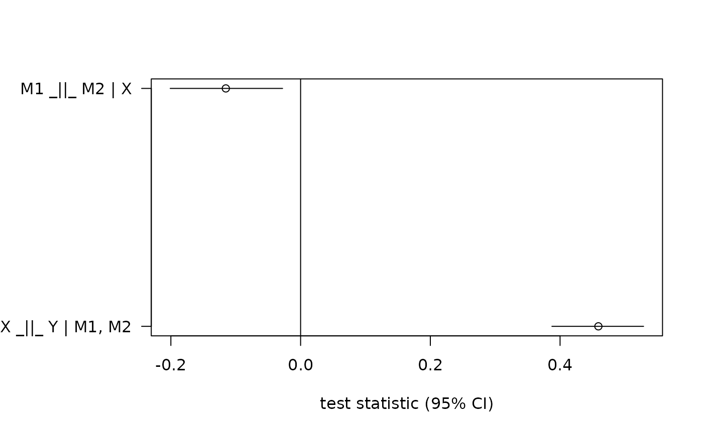
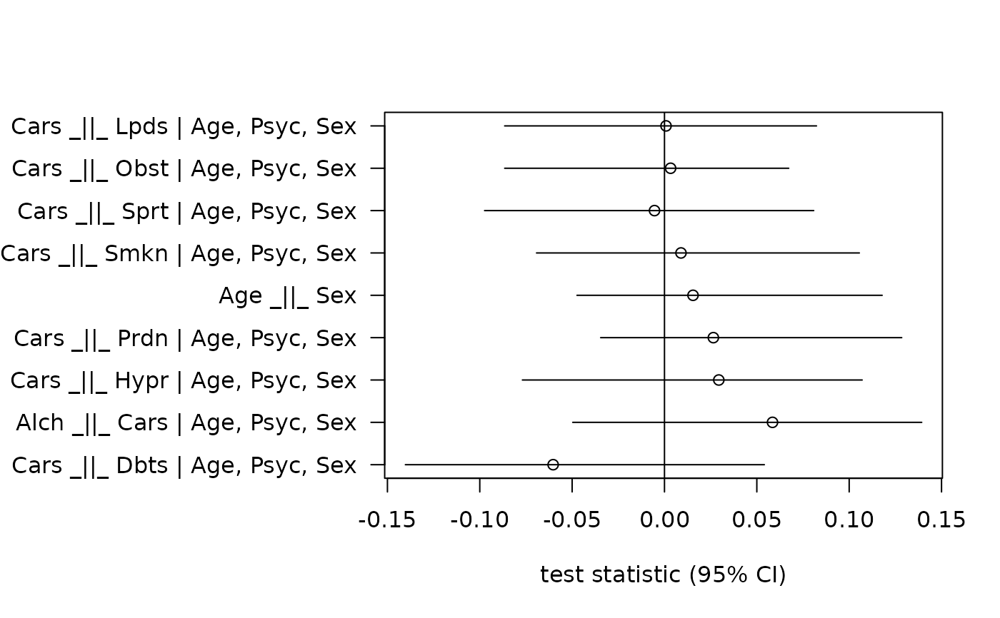

Derives testable implications from the given graphical model and tests them against the given dataset.
Usage
localTests(
x = NULL,
data = NULL,
type = c("cis", "cis.loess", "cis.chisq", "cis.pillai", "tetrads", "tetrads.within",
"tetrads.between", "tetrads.epistemic"),
tests = NULL,
sample.cov = NULL,
sample.nobs = NULL,
conf.level = 0.95,
R = NULL,
max.conditioning.variables = NULL,
abbreviate.names = TRUE,
tol = NULL,
loess.pars = NULL
)
ciTest(X, Y, Z = NULL, data, ...)Arguments
- x
the input graph, a DAG, MAG, or PDAG. Either an input graph or an explicit list of tests needs to be specified.
- data
matrix or data frame containing the data.
- type
character indicating which kind of local test to perform. Supported values are
"cis"(linear conditional independence),"cis.loess"(conditional independence using loess regression),"cis.chisq"(for categorical data, based on the chi-square test),"cis.pillai"(for mixed data, based on canonical correlations),"tetrads"and"tetrads.type", where "type" is one of the items of the tetrad typology, e.g."tetrads.within"(seevanishingTetrads). Tetrad testing is only implemented for DAGs.- tests
list of the precise tests to perform. If not given, the list of tests is automatically derived from the input graph. Can be used to restrict testing to only a certain subset of tests (for instance, to test only those conditional independencies for which the conditioning set is of a reasonably low dimension, such as shown in the example).
- sample.cov
the sample covariance matrix; ignored if
datais supplied. Eitherdataorsample.covandsample.nobsmust be supplied.- sample.nobs
number of observations; ignored if
datais supplied.- conf.level
determines the size of confidence intervals for test statistics.
- R
how many bootstrap replicates for estimating confidence intervals. If
NULL, then confidence intervals are based on normal approximation. For tetrads, the normal approximation is only valid in large samples even if the data are normally distributed.- max.conditioning.variables
for conditional independence testing, this parameter can be used to perform only those tests where the number of conditioning variables does not exceed the given value. High-dimensional conditional independence tests can be very unreliable.
- abbreviate.names
logical. Whether to abbreviate variable names (these are used as row names in the returned data frame).
- tol
bound value for tolerated deviation from local test value. By default, we perform a two-sided test of the hypothesis theta=0. If this parameter is given, the test changes to abs(theta)=tol versus abs(theta)>tol.
- loess.pars
list of parameter to be passed on to
loess(fortype="cis.loess"), for example the smoothing range.ciTest(X,Y,Z,data)is a convenience function to test a single conditional independence independently of a DAG.- X
vector of variable names.
- Y
vector of variable names.
- Z
vector of variable names.
- ...
parameters passed on from
ciTesttolocalTests
Details
Tetrad implications can only be derived if a Gaussian model (i.e., a linear structural equation model) is postulated. Conditional independence implications (CI) do not require this assumption. However, both Tetrad and CI implications are tested parametrically: for Tetrads, Wishart's confidence interval formula is used, whereas for CIs, a Z test of zero conditional covariance (if the covariance matrix is given) or a test of residual independence after linear regression (it the raw data is given) is performed. Both tetrad and CI tests also support bootstrapping instead of estimating parametric confidence intervals. For the canonical correlations approach, all ordinal variables are integer-coded, and all categorical variables are dummy-coded (omitting the dummy representing the most frequent category). To text X _||_ Y | Z, we first regress both X and Y (which now can be multivariate) on Z, and then we compute the canonical correlations between the residuals. The effect size is the root mean square canonical correlation (closely related to Pillai's trace, which is the root of the squared sum of all canonical correlations).
Examples
# Simulate full mediation model with measurement error of M1
set.seed(123)
d <- simulateSEM("dag{X->{U1 M2}->Y U1->M1}",.6,.6)
# Postulate and test full mediation model without measurement error
r <- localTests( "dag{ X -> {M1 M2} -> Y }", d, "cis" )
plotLocalTestResults( r )

# Simulate data from example SEM
g <- getExample("Polzer")
d <- simulateSEM(g,.1,.1)
# Compute independencies with at most 3 conditioning variables
r <- localTests( g, d, "cis.loess", R=100, loess.pars=list(span=0.6),
max.conditioning.variables=3 )
plotLocalTestResults( r )

# Test independencies for categorical data using chi-square test
d <- simulateLogistic("dag{X->{U1 M2}->Y U1->M1}",2)
localTests( "dag{X->{M1 M2}->Y}", d, type="cis.chisq" )
#> rmsea x2 df p.value rmsea 2.5% rmsea 97.5%
#> M1 _||_ M2 | X 0.10154268 8.266720 2 0.01602893 0 0.2382388
#> X _||_ Y | M1, M2 0.09931406 6.576621 3 0.08668925 0 0.3220601